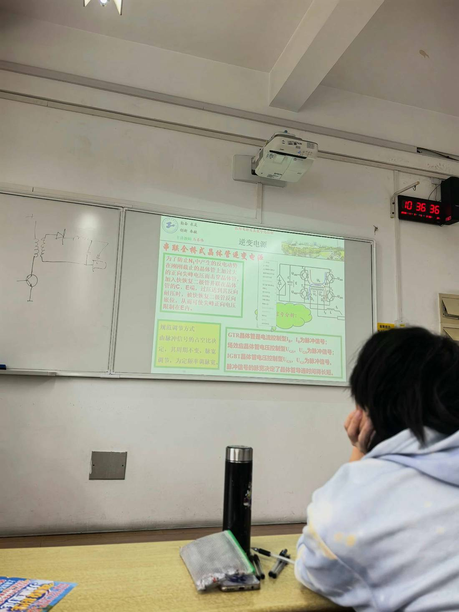

13 手写笔记/课堂实拍/kt-05 串联全桥式逆变电源＋规范调节方式（定频调脉宽）
kt-05 串联全桥式逆变电源＋规范调节方式（定频调脉宽）
📷 课堂实拍 · 老师标注为重点（原图见下；文字为转录，公式/接点以图为准）
串联全桥式逆变电源＋规范调节方式（定频调脉宽）

实拍转录
- 老师红字标题：串联全桥式晶体管逆变电源。
- 防反电动势击穿（原话）：为了防止 N₁ 中产生的反电动势在刚刚截止的晶体管上加过大的正向尖峰电压而击穿晶体管，加入快恢复二极管，并在晶体管的 C、E 端并联；当电压达到其反向耐压时，快恢复二极管反向钳位，从而可使尖峰正向电压限制在 E 内。
- 规范调节方式（原话）：由脉冲信号的占空比决定，其周期不变，脉宽调节——为定频调脉宽。
- 三种器件的控制量：GTR 晶体管是电流控制型，I_B 为脉冲信号；场效应晶体管电压控制型 U_GS，U_GS 为脉冲信号；IGBT 晶体管电压控制型 U_GE，U_GE 为脉冲信号。
- 脉冲信号的脉宽决定了晶体管导通时间得长短。
- （左侧白板：老师手画的整流 + 电感 + 开关示意）
本页重点
- 全桥四只管两两导通，靠"定频调脉宽"（PWM）调输出——周期不变、只改脉宽。
- 快恢复二极管并在 C、E 之间做钳位，把关断尖峰限制在电源电压 E 以内，保护开关管。
- 控制量按器件分：GTR 看 I_B（电流型），MOSFET 看 U_GS，IGBT 看 U_GE（都是电压型）。
考点（怎么考）
- 名词：定频调脉宽（PWM）＝周期不变、调节脉宽。
- 为什么加并快恢复二极管？答：钳位关断尖峰，防二次击穿。
- 三种器件各是电流型还是电压型、控制量符号是什么。
对应讲义页
- p260 · 全桥式逆变电路
- p268 · PWM （pulse width modify）控制即脉冲宽度控制方式
- p269 · 当电源电压不变的情况下，实际
- p262 · 2.双端逆变电路特点与应用
关联
- 概念卡：双端逆变电路 · PWM 控制 · 绝缘栅双极型晶体管
- 讲义：00 第6章 逆变式 导航 · 总览：课堂实拍总览
- 索引：01 弧焊电源 MOC · 课件标红总表